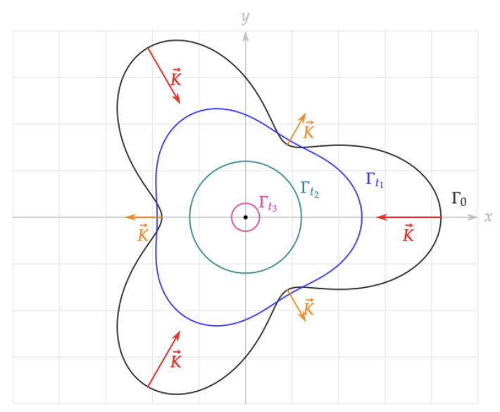

1. Curve Shortening Flow is Heat Equation for Curves
Definition 1.1 (Curve shortening flow). Let \(\{\Gamma_t \}_{t \ge 0}\) be a family of simple closed smooth curves embedded in \(\mathbb{R}^2\) . We say that \(\Gamma_t\) evolves by a curve shortening flow if every point on \(\Gamma_t\) , say \(X\) , moves by its curvature vector at \(X \in \Gamma_t\) , i.e.,
\[ \partial_t X = \vec{K}. \]
Many differential geometry books follow different conventions for parameterization.
Remark. We provide a counterclockwise parameterization for a simple closed smooth curve during this lecture. Also, we would denote the normal vector \(\vec{N}\) to always refer to the inner part of the simple closed curve. The inner part is defined by the Jordan curve theorem.
1.1 Short Review on Curves
Before we discuss curve shortening flows, we would briefly review curves. Let \(\gamma\) be a parameterization of a curve as
Definition 1.2 (Curvature vector). Let \(\gamma : I \to \mathbb{R}^2\) be a curve parameterized by arc length \(s\) . Then, \(\gamma''(s) = \vec{K}(s)\) is called the curvature vector of \(\gamma\) at \(s\) . The size \(\left \vert \vec{K}(s) \right \vert\) is called the curvature and denoted as \(\kappa\) .
We denoted the magnitude of curvature vector as \(\kappa\) . We would also like to give a notion of direction of curvature vector.
Definition 1.3 (Normal vector). The unit vector \(\vec{N} (s)\) such that \(\gamma''(s) = \kappa \vec{N}(s)\) is called the normal vector of \(\gamma\) at \(s\) .
By differentiating \(\gamma'(s) \cdot \gamma'(s) = 1\) , we get that \(\gamma''(s) \cdot \gamma'(s) = 0\) , which means that \(\vec{N}(s)\) is normal to \(\gamma'(s)\) . We also define the unit tangent vector as follows.
Definition 1.4 (Tangent vector). The unit vector \(\vec{T}(s)\) such that \(\vec{T}(s) = \gamma'(s)\) is called the tangent vector of \(\gamma\) at \(s\) .
What if we use different parameterization than \(s\) ?
Remark. Using \(u\) instead of the reparameterized parameter \(s\) , we get
\[ \vec{T} = \frac{\gamma_u}{|\gamma_u|}. \]Also, we define
\[ g = |\gamma_u| = \frac{ds}{du}. \]So, the curvature vector is given by
\[ \vec{K} = \frac{\partial \vec{T}}{\partial s} = \frac{1}{g} \frac{\partial \vec{T}}{\partial u} = \frac{1}{g} \left ( \frac{\gamma_u}{g} \right )_u = \frac{g \gamma_{uu} - g_u \gamma_u}{g^3}. \]If \(\gamma\) is a regular curve, then \(g \ne 0\) , which makes the above equation well-defined. Then, we can consider the following:
\[ \vec{K} = \kappa \vec{N} = \vec{T} \wedge \vec{K} = \frac{\gamma_u}{|\gamma_u|} \wedge \vec{K} = \frac{\gamma_u \wedge \gamma_{uu}}{g^3}. \]So, we can also say that \(\vec{K} = \kappa \vec{N}\) where
\[ \kappa = \frac{\det (\gamma_u , \gamma_{uu})}{g^3}. \]
Now we give an example of a graph function.
Example 1.5. Consider that we have a graph function \(y = f(u)\) , i.e., \(\gamma(u) = \left ( u , f(u) \right )\) . Then we get the curvature \(\kappa\) as
\[ \kappa = \frac{\begin{vmatrix} 1 & f_u \\ 0 & f_{uu} \end{vmatrix}}{\left ( \left ( 1 + f_u ^2 \right )^{1/2} \right )^3} = \frac{f_{uu}}{\left ( 1 + f_u ^2 \right )^{3/2}}. \]
1.2 Review on Definition of CSF
By reviewing the definition of curve shortening flow using the language of Section 1.1, \(\Gamma_t\) evolves by curve shortening flow if and only if
Example 1.6 (Examples of Curve Shortening Flow).
Consider \(\Gamma_t = \partial B_{r(t)} (0)\) where \(B_r (p)\) is a ball of radius \(r\) centered at \(p\) . We have \(\kappa = 1/r(t) > 0\) . Then, \(\Gamma_t\) evolves by curve shortening flow if and only if
\[ \dot{r}(t) = - \frac{1}{r(t)} \implies \frac{1}{2} \left \{ \left ( r(t) \right )^2 \right \}^\prime = -1 \implies r(t) = \sqrt{r_0^2 - 2t}. \]Consider a graph \(f(u,t)\) .
Exercise. \(\Gamma_t\) evolves by curve shortening flow if and only if \(f\) satisfies the following:
\[ f_t = \frac{f_{uu}}{\left ( 1 + f_u^2 \right )} \]
Note the absence of power \(3/2\) compared with the curvature formula for a graph function.
There is a very well-known solution for this PDE, which is given by the following explicit formula:
\[ f(u,t) = t - \log (\cos u ) , \quad u \in \left ( - \frac{\pi}{2} , \frac{\pi}{2} \right ). \]This is called the Grim reaper solution.
Now we state the main theorem of this course. We first get an intuition from the figure below.

A geometric visualization of curve shortening flow acting on a non-convex curve. The flow velocity is governed by the local curvature vector \(\vec{K}\) . Regions of high positive curvature (spikes) retract inward (red vectors), whereas regions of negative curvature (dents) are pushed outward (orange vectors). This mechanism guarantees that any simple closed curve will eventually resolve its self-intersections and become perfectly convex, ultimately shrinking to a circular singularity.
Theorem 1.7 (Gage-Hamilton-Grayson) 1 2 . For any given smooth simple closed curve \(\Gamma_0\) in \(\mathbb{R}^2\) , there uniquely exists a solution to the curve shortening flow \(\Gamma_t\) on a maximal finite time interval \([0, T)\) . As \(t \to T\) , the curve \(\Gamma_t\) becomes asymptotically circular and converges to a single point \(x_0 \in \mathbb{R}^2\) . Moreover,
\[ \frac{1}{\sqrt{T-t}} \left ( \Gamma_t - x_0 \right ) \overset{t \nearrow T}{\longrightarrow } \partial B_{\sqrt2} (0) \]converges smoothly.
Actually, the proof of this remarkable result is historically and mathematically divided into two distinct phases:
- Gage-Hamilton (1986): This governs the final asymptotic phase. Gage and Hamilton 1 proved that once a simple closed curve is strictly convex, it will shrink to a point in finite time, becoming asymptotically circular as it collapses.
- Grayson (1987): This governs the initial phase of the flow. Grayson 2 proved that an arbitrary, non-convex smooth simple closed curve will eventually become strictly convex without ever forming singularities or self-intersections.
However, we would not follow Gage-Hamilton-Grayson's proof of this theorem, but rather we would follow a more modern method throughout this course. We have some reference, a lecture note by R. Haslholfer, Lectures on Curve Shortening Flow 3 .
1.3 Change of Length and Area
Recall the definition that \(g = |\gamma_u|\) , or \(ds = g du\) . Then,
We know that \(\gamma_u = g \gamma_s = g \vec{T}\) and \(\gamma_t = \kappa \vec{N}\) . Because the tangent and normal vectors are orthogonal, \(\langle \gamma_t, \gamma_u \rangle = \langle \kappa \vec{N}, g \vec{T} \rangle = 0\) . Taking the spatial derivative \(\partial_u\) of this inner product yields \(\langle \gamma_{tu}, \gamma_u \rangle + \langle \gamma_t, \gamma_{uu} \rangle = 0\) . Thus,
Since \(\gamma_u = g \vec{T}\) , \(\gamma_{uu} = g_u \vec{T} + g \vec{T}_u = g_u \vec{T} + g \cdot g \vec{T}_s = g_u \vec{T} + g^2 \kappa \vec{N}\) . The first term gives \(0\) by taking the inner product with \(\gamma_t = \kappa \vec{N}\) , so
Then, we get the evolution of the length of the curve:
Remark. We used \(\gamma_t = \kappa \vec{N}\) . But suppose that \(\gamma_t = v \vec{N}\) . Then, \(\frac{\partial}{\partial t} ds = - \kappa v ds\) .
Now denote \(A(t)\) as the area of the region bounded by \(\Gamma_t\) .
Exercise 1.8. Prove that
\[ \frac{d}{dt} A(t) = - \int_{S^1} \kappa ds = -2 \pi. \]
This leads that \(A(t) = A(0) - 2\pi t\) .
Corollary 1.9. This is a corollary of Gage-Hamilton-Grayson theorem. We get that the maximal \(T\) is
\[ T = \frac{A(0)}{2\pi} < \infty. \]Suppose that we are given a simple closed curve \(\Gamma_0\) . Our solution cannot exist after this time \(T = \frac{A(0)}{2\pi}\) .
Now we give another important theorem, which is the avoidance principle.
Theorem 1.10 (Avoidance principle). Suppose that we are given two curve shortening flows \(\Gamma_t\) and \(\overline{\Gamma}(t)\) . Assume that one of them is simple and closed. If \(\Gamma_0\) and \(\overline{\Gamma}(0)\) are disjoint, then \(\Gamma_t\) and \(\overline{\Gamma}(t)\) are disjoint for \(t \ge 0\) as long as solutions exist.
Moreover, we can define the distance
\[ d(t) = \operatorname{dist} (\Gamma_t , \overline{\Gamma}(t)) = \inf \left \{d(p,q) \mid p \in \Gamma_t , \; q \in \overline{\Gamma}(t) \right \}. \]Then, \(d(t)\) is non-decreasing in \(t\) .
Proof. Since at least one of the curves is simple and closed (which implies it is compact), the infimum of the distance between them is strictly achieved. Thus, for any time \(t\) , there exist points \(p \in \Gamma_t\) and \(q \in \overline{\Gamma}(t)\) such that \(d(t) = \operatorname{dist}(p, q)\) .
Because \(p\) and \(q\) minimize the distance between the two curves, the line segment connecting them must be perpendicular to the tangent spaces of both curves. Therefore, the normal vectors at \(p\) and \(q\) are collinear. Assuming they are oriented in the same direction, we have \(N(p) = \overline{N}(q) = N\) .
Furthermore, looking at the local geometry at these closest points, the inner curve \(\overline{\Gamma}(t)\) must be bounded by the outer curve \(\Gamma_t\) . By comparing their osculating circles, the inner curve must have a curvature greater than or equal to that of the outer curve to avoid intersection:
\[ \overline{\kappa}(q) \ge \kappa(p). \]Under the curve shortening flow, the points evolve with normal velocities \(\partial_t p = \kappa(p) N\) and \(\partial_t q = \overline{\kappa}(q) N\) . The rate of change of the distance \(d(t)\) is determined entirely by the relative velocity of these points projected onto the unit vector connecting them:
\[ \frac{d}{dt} d(t) = \langle \partial_t q - \partial_t p , N \rangle = \langle \overline{\kappa}(q) N - \kappa(p) N , N \rangle = \overline{\kappa}(q) - \kappa(p). \]Since we established from the geometric containment that \(\overline{\kappa}(q) \ge \kappa(p)\) , it directly follows that:
\[ \frac{d}{dt} d(t) \ge 0. \]Because the inner curve moves inward faster than the outer curve, \(d(t)\) is a non-decreasing function of \(t\) . Consequently, if the curves are initially disjoint ( \(d(0) > 0\) ), they must remain disjoint ( \(d(t) \ge d(0) > 0\) ) for as long as the flows exist. \(\blacksquare\)
Now we give a corollary.
Corollary 1.11. Suppose that \(\Gamma_0\) is included in the inner part of \(\partial B_R (0)\) . Then, by Corollary 1.9 and Theorem 1.10 (Avoidance principle), \(\Gamma_t\) cannot exist beyond \(R^2 / 2\) .
-
Gage, M., & Hamilton, R. S. (1986). The heat equation shrinking convex plane curves. Journal of Differential Geometry , 23(1), 69-96. ↩ ↩
-
Grayson, M. A. (1987). The heat equation shrinks embedded plane curves to round points. Journal of Differential Geometry , 26(2), 285-314. ↩ ↩
-
Haslhofer, R. (2026). Lectures on curve shortening flow. arXiv preprint arXiv:2604.01981 . ↩